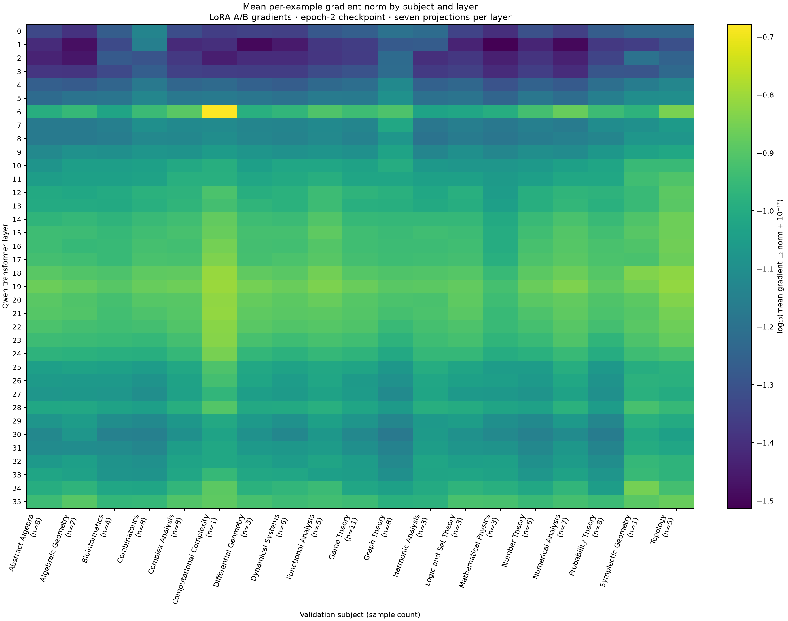
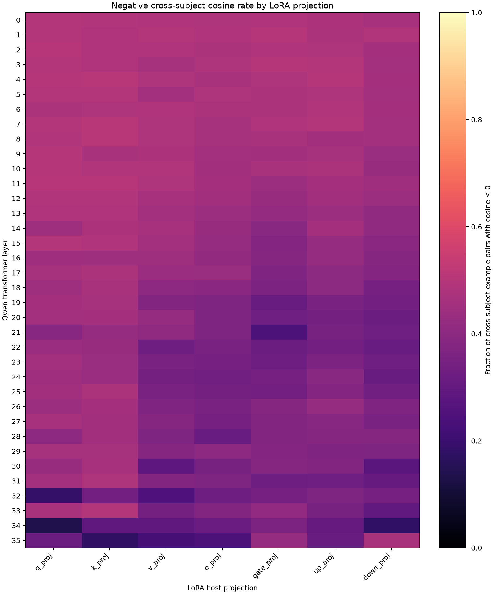
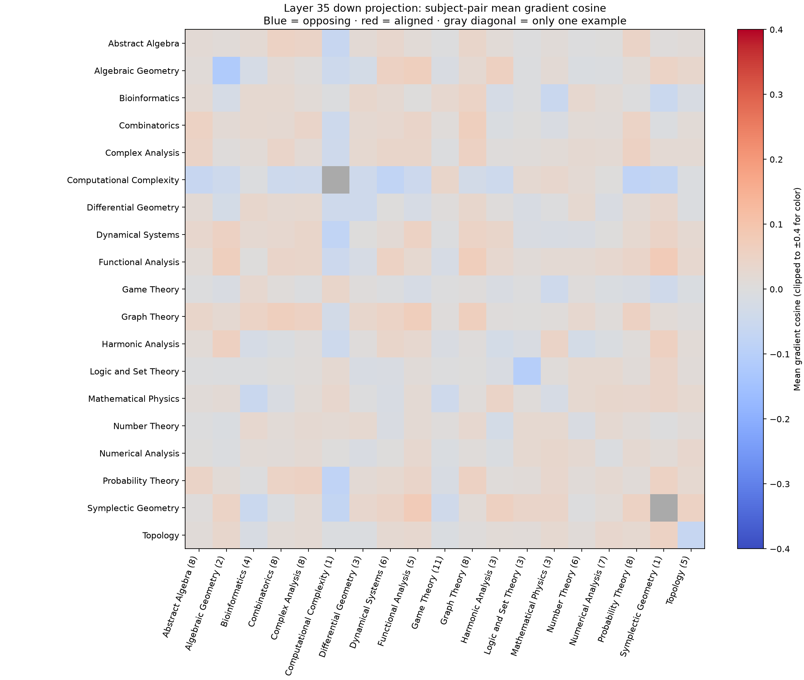
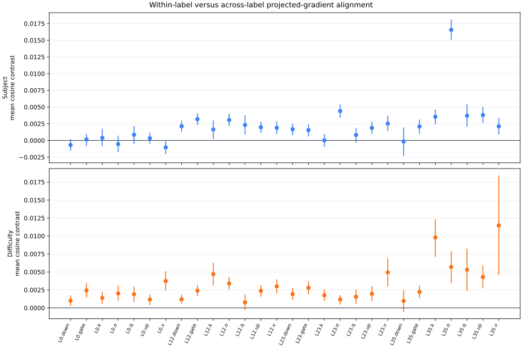

Investigating the Emergence of Specialized Adapters for Text-to-Manim Generation
An exploratory study of whether subject labels and a code-length difficulty proxy explain the gradient structure of a shared LoRA adapter.
The study began with the hypothesis that mathematical subject or program complexity could produce distinct LoRA adaptation needs. Three adapters were first assigned by a code-length label. A shared adapter was then examined to see whether comparable groups appeared in its gradients.
Negative gradient cosines were common in 100 held-out examples. Projected gradients from 481 training examples were also compared with subject and code-length labels across 28 LoRA modules. The largest adjusted Rand index was 0.057 for subject and 0.041 for code length. These labels explained only a small part of the measured gradient structure.
1. Introduction
Text-to-Manim generation maps a lesson request to a Python program that expresses mathematical content through an animation.
D-MoLE provided the starting point for this investigation. Its experts are allocated and routed layer by layer during continual multimodal instruction tuning.1 That design raised a smaller question: do text-to-Manim gradients contain stable groups that could justify separate adapters?
Subject labels and target-code length were treated as possible group boundaries. The term emergence refers to this search for structure. Online adapter spawning was outside the experiment. The three earlier adapters were assigned in advance through an oracle label, which supplies no evidence of learned specialization.
3. Methodology
Dataset and labels
The prepared Bespoke-Manim corpus contains 995 prompt-program pairs from the pinned dataset revision.4 Rows were retained when python_code was present and the dataset contained no recorded error. Mathematical correctness and renderability were outside that filter.
The corpus contains 23 subject labels. Target Python line count was split into tertiles: 336 foundational, 332 intermediate, and 327 advanced examples. These names are used as a code-length difficulty proxy. Line count also changes with formatting and animation verbosity.
Fixed specialists and the shared probe
Three rank-16 LoRA checkpoints were first trained, one for each code-length band. The known band supplied the oracle route. A direct loss comparison with the later shared adapter was avoided because the base checkpoint and evaluation contract differ.
The shared probe used rank 16, alpha 32, dropout 0.05, and seven projection types on a 4-bit-loaded Qwen3-4B-Instruct checkpoint. Loss was applied to assistant code tokens. Complete prompt-plus-code sequences were limited to 3,072 tokens. Gradients were measured at step 1,790.
- Exact held-out gradients: unprojected LoRA A/B gradients from 100 validation examples and 19 subjects. Gradients were concatenated within each of 252 modules across 36 layers. The surviving artifact contains aggregated cosine summaries.
- Projected training signatures: 256-dimensional signatures from 481 training examples and eight subjects. Seven projection types were recorded at layers 0, 12, 23, and 35, giving 28 modules. Coordinates were accumulated into deterministic signed-hash buckets.
Gradient conflict
For example i and LoRA module m, the gradient was defined with respect to the trainable parameters of that module:
Pairwise cosine similarity measures whether two examples point toward similar local updates. A pair was counted as conflicting when the cosine was negative:
This statistic describes a local pairwise relationship. Adapter specialization requires stable groups under repeated measurement.
Tests of label structure
Each nonzero projected signature was normalized. For record i, the mean cosine to records with the same label was compared with the mean cosine to records carrying another label:
The standardized pair-mean difference uses sqrt((variance within + variance across) / 2) as its denominator. The value is descriptive because many pairs share the same record.
Record contrasts were resampled 2,000 times for descriptive intervals. Labels were shuffled 2,000 times with group sizes held fixed. Benjamini-Hochberg and Bonferroni corrections were applied separately to the 28 tests for each label system.5
Spherical k-means was then fitted per module with eight clusters for subject and three for code length. Ten initializations were used. Agreement was measured with adjusted Rand index (ARI) and normalized mutual information (NMI), with shuffled labels providing chance baselines.6
4. Experiments
| Evidence view | Examples | Labels represented | Modules | Role |
|---|---|---|---|---|
| Exact held-out LoRA gradients | 100 validation | 19 subjects | 252 | Measure conflict prevalence |
| Projected signatures | 481 training | 8 subjects; 3 proxy bands | 28 | Test label association and clustering |
| Placement ablation | 895 train / 100 validation | No routed labels | 4 placements per arm | Check whether placement can matter |
The exact analysis contains 4,665 unique cross-subject pairs per module. The projected analysis contains 115,440 unique pairs per module. Subject labels produce 14,621 within-label pairs and 100,819 cross-label pairs. Code-length labels produce 38,356 within-band pairs and 77,084 cross-band pairs.
Four equal-size adapter placements were also trained for 64 steps with seed 42. Each arm contained 466,944 trainable parameters. Validation loss was measured; generation was outside this short ablation.
5. Results
Layer structure dominated gradient magnitude
Gradient norms varied strongly by transformer layer. The broad layer pattern was repeated across the 19 held-out subjects. Several columns contain few examples, so small subject-level differences should be treated cautiously.

Cross-subject conflict was widespread
Across 252 exact-gradient modules, 13.9% to 50.8% of cross-subject pairs had negative cosine. Each module contains 4,665 unique cross-subject pairs. Layer-aggregated rates ranged from 15.6% to 48.8% across 36 layers.
The distribution changed across layers and projection types. No single subject partition follows from that frequency alone.


layer_35.down_proj. Blue cells indicate opposing mean directions and red cells indicate aligned directions. This module was selected after exploratory inspection. Several subjects have fewer than five examples.Small label-associated effects
For subject labels, the median per-record cosine contrast across 28 modules was 0.0019, with a range from −0.0010 to 0.0166. Seventeen of 28 modules had a Benjamini–Hochberg q-value at or below 0.05, and 11 of 28 survived Bonferroni correction. The standardized pair-mean differences had a median of 0.025 and a maximum of 0.174.
The code-length proxy produced a median contrast of 0.0023 and a range from 0.0008 to 0.0115. Twenty-six of 28 modules met the q ≤ 0.05 threshold, and 18 of 28 survived Bonferroni correction. Its standardized differences had a median of 0.033 and a maximum of 0.085.
Each permutation reshuffles 481 record labels. The 115,440 pairwise terms reuse those records, violating independence. Significance here describes the frozen checkpoint under its label-shuffle test. Reproducibility across runs remains unmeasured.

Weak agreement between clusters and labels
Subject ARI ranged from −0.003 to 0.057; subject NMI ranged from 0.020 to 0.093. Code-length ARI ranged from −0.003 to 0.041; NMI ranged from 0.001 to 0.049.
Some modules exceeded shuffled-label baselines. Their absolute agreement remained low, leaving substantial label mixing in a router trained to reproduce either label system.

Placement mattered in one short run
| 64-step placement arm | Validation loss | Replicates | Generation evaluated? |
|---|---|---|---|
| Gradient-probe-selected | 0.6455 | 1 | No |
| Random 1 | 0.6696 | 1 | No |
| Random 2 | 0.7069 | 1 | No |
| Low energy | 0.8319 | 1 | No |
The gradient-selected placement reached the lowest validation loss in this four-arm comparison. Evidence from one seed and 64 updates is preliminary. Layer placement remains a separate question from subject-based routing.
6. Discussion
The evaluated partitions had little agreement with subject or code-length labels. This checkpoint supplies little support for spawning adapters from either label system.
The original hypothesis treated dataset labels as possible task boundaries. Subject labels describe mathematical content. Every example still asks for a runnable visual program. Code length is closer to output structure, which may explain its stronger permutation results. Its three labels still remain mixed within the fitted clusters.
Negative cosine reveals local competition between examples. An adapter-spawning rule would require persistence across checkpoints and seeds, followed by a measured benefit from routing. Conflict frequency alone supplies none of that evidence.
7. Limitations
The projected stream covers 481 of 895 training examples and eight of the corpus's 23 subjects. The exact view covers 19 subjects, with as few as one example in some groups. Only aggregate exact-gradient statistics survived. The exact and projected views answer different questions.
Code-length bands are derived from the target program, so a new prompt has no observed band at inference time. They can also capture formatting and animation verbosity. The fixed specialists used a different base checkpoint and evaluation contract, preventing a controlled comparison with the shared adapter.
Clustering was evaluated at one checkpoint with one projection seed. Preservation of exact cosine or cluster structure by the 256-dimensional signed-hash projection was not measured. The exact artifact is too aggregated to recover that comparison.
Layer 35 was selected after exploratory visualization. The placement ablation used one seed, 64 steps, and validation loss only. Rendered-video quality and downstream routing gains remain unmeasured.
8. Conclusion
D-MoLE motivated a search for adapter groups inside text-to-Manim training dynamics. Subject and code-length labels left measurable traces in the projected gradients. The fitted partitions showed little agreement with either label system.
Specialized adapters remain a hypothesis for a controlled routing experiment. Exact gradients should be collected across checkpoints and seeds. Any stable partition should then be tested on held-out program generation and rendering.
References
- Ge, C. et al. (2025). Dynamic Mixture of Curriculum LoRA Experts for Continual Multimodal Instruction Tuning. ICML, PMLR 267.
- Hu, E. J. et al. (2021). LoRA: Low-Rank Adaptation of Large Language Models. arXiv:2106.09685.
- Yu, T. et al. (2020). Gradient Surgery for Multi-Task Learning. NeurIPS 33.
- Bespoke Labs. Bespoke-Manim dataset, revision
4542ab8b32483c30d1772946dacae2ad1ae9274c. - Benjamini, Y. and Hochberg, Y. (1995). Controlling the False Discovery Rate: A Practical and Powerful Approach to Multiple Testing. JRSS B, 57(1), 289–300.
- Hubert, L. and Arabie, P. (1985). Comparing Partitions. Journal of Classification, 2, 193–218.